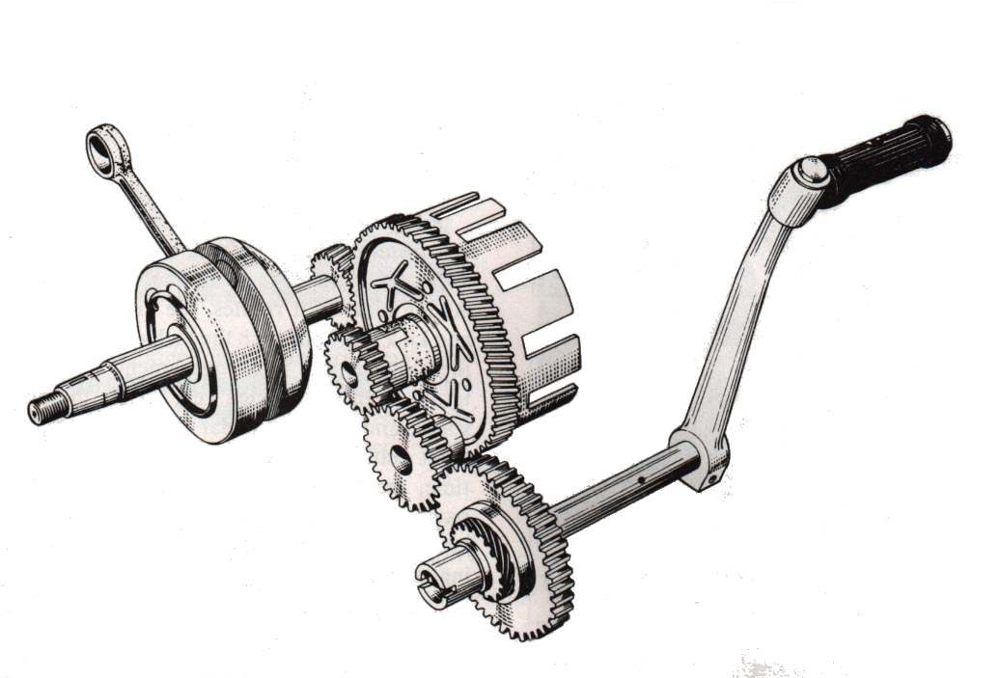

Repair / Starting
Starting
Problems, repairs and parts for the starting.





Problems
- Pops or bangs when trying to startRide with care
- Engine turns over but will not startDo not ride
- Engine is flooded and smells of fuelDo not ride
- Hard to start when the engine is coldRide with care
- Hard to start when the engine is hotRide with care
- Kickstarter will not move or does not spring backRide with care
- Kickstarter kicks back against my footRide with care
- Kickstarter slips or turns without turning the engineRide with care
- Will not start after rain or washingRide with care
- Will not start after standing for weeks or monthsDo not ride
- Engine turns over slowlyRide with care
- Will not start in gear, on the side stand or without the clutch pulledRide with care
- Starter relay clicks but the engine does not turnRide with care
- Grinding or screeching noise when startingRide with care
- Starter keeps turning after I let go of the buttonStop now
- Nothing happens when I press the starter buttonRide with care
- Starter motor whirs but the engine does not turnRide with care
- Starts only with the choke on or the throttle held openRide with care
- Engine starts, then dies after a few secondsDo not ride
- Starter turns the engine but the engine will not fire (weak battery)Do not ride
- Kickstarter is very hard to push throughRide with care
Repairs
- Test and charge a 12 V batteryHome workshop · 15 min to test; charging takes many hours
- Clean and tighten battery terminalsRider job · 15 to 30 min
- Check fuses and relaysRider job · 10 to 30 min
- Test the side stand, clutch and neutral switchesHome workshop · 20 to 40 min
- Test the engine stop switchHome workshop · 20 to 30 min
- Test the starter relayHome workshop · 20 to 30 min
- Test the starter circuitHome workshop · 30 to 60 min
- Remove and inspect the starter motorWorkshop job · 1 to 2 h assessment
- Clean a handlebar switchHome workshop · 30 to 60 min
- Jump start a motorcycle safelyRider job · 10 to 15 min
- Clean and tighten earth connectionsHome workshop · 20 to 45 min
- Assess bottom end and internal engine damageWorkshop job · 1 h assessment; strip 4 to 10 h
- Check the engine oil levelRider job · 5 to 10 min (estimate, includes warm-up and settling)
- Test engine compressionHome workshop · 30 to 45 min
- Replace a 12 V batteryHome workshop · 20 to 40 min, plus first charge
- Change the engine oil and clean the strainerHome workshop · 40 to 60 min
- Check the starter clutchWorkshop job · 2 to 3 h assessment
- Check the ignition timingWorkshop job · 30 to 60 min assessment
- Find a short circuitHome workshop · 30 to 120 min
- Check the kickstart mechanismWorkshop job · 15 min outside checks; 2 to 4 h internal assessment
- Adjust clutch lever free playRider job · 10 to 15 min
- Inspect and replace clutch plates and springsWorkshop job · 1.5 to 3 h (assessment and plate change, engine in frame)
- Check the gear lever and shift linkageHome workshop · 15 to 30 min
- Test the ignition pick-upHome workshop · 20 to 30 min
- Diagnose a suspected CDI or ECU faultWorkshop job · 1 to 2 h assessment
- Check and adjust valve clearanceHome workshop · 45 to 90 min (estimate, screw-and-locknut type)
- Check for a spark safelyHome workshop · 10 to 15 min
- Remove, check, gap and fit a spark plugRider job · 15 to 20 min
- Clear a flooded engineRider job · 10 to 30 min
- Check the fuel tap, lines and flowHome workshop · 20 to 45 min
- Check the fuel pump (fuel injection)Home workshop · 15 to 45 min for the home checks
- Read engine fault codes (fuel injection)Home workshop · 15 to 30 min
- Clean the carburettorHome workshop · 1.5 to 3 h
- Clean or replace the air filterRider job · 15 to 40 min (estimate, plus drying time for foam)
- Check the choke or starter valveHome workshop · 20 to 45 min
- Check the engine sensors (TPS, MAP, temperature)Workshop job · 10 min for home checks; 30 to 90 min at a workshop
- Find an intake air leakHome workshop · 20 to 45 min
- Test the ignition coil and plug capHome workshop · 30 to 60 min (fuel tank may need removing)
- Check the carburettor float and needle valveHome workshop · 30 to 60 min with the carburettor off
- Check air cooling (fins, airflow, mixture)Rider job · 20 to 40 min
- Check the fuel injectorWorkshop job · 10 min for home checks; 1 to 2 h at a workshop
- Check the fuel tank ventRider job · 10 to 20 min
- Clean the throttle bodyHome workshop · 30 to 60 min
- Adjust carburettor idle speed and mixtureHome workshop · 20 to 40 min
- Reset the idle after throttle body workWorkshop job · 15 to 45 min at a workshop with the right tool
- Test the neutral switchHome workshop · 20 to 45 min
- Check the side standRider job · 10 to 20 min
- Clean and seal electrical connectorsHome workshop · 15 to 45 min
- Find a wiring faultHome workshop · 30 to 90 min
- Bring a bike back into use after storageHome workshop · 2 to 4 h
- Drain old or contaminated fuelHome workshop · 30 to 60 min
- Replace the fuel filterHome workshop · 20 to 40 min for an inline filter; in-tank filters are workshop jobs
- Find and fix an exhaust leakHome workshop · 30 to 60 min